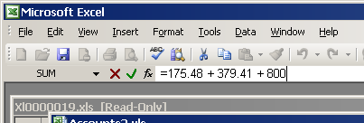
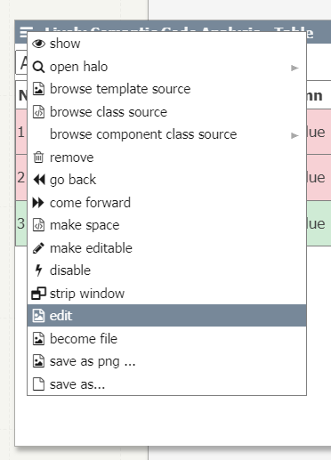
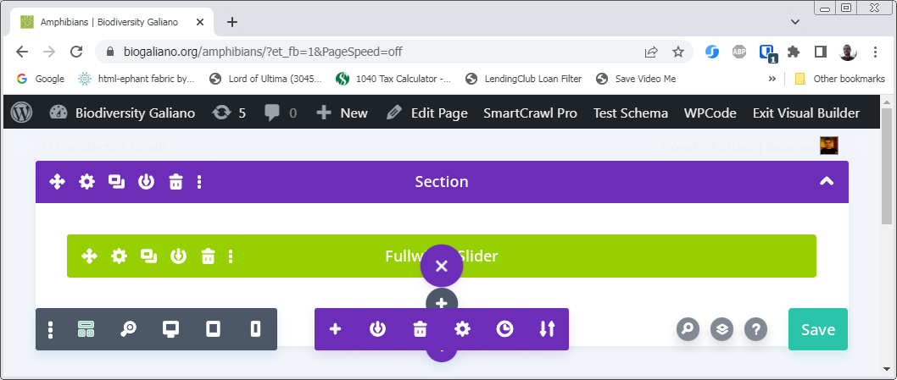

I argue that what the public really wants is disclosable computing.
The first error committed by those trying to make the power of computing accessible to the wider public is to assume that they want or need this power. Backed up by (Rode et al, 2006)[1] I consider that what the public largely would like is some more or less coordinated access to some body of state. Whereas, the designer of a new kind of computational expression usually starts by seeing what form is taken by a recursive chestnut such as the Fibonacci numbers or the factorial function, as if these represented some kind of standard requirement rather than a certain kind of in-joke.
In practice, the public would prefer an environment which does not readily expose that it is capable of computation, if indeed it is at all. Henri Picciotto, a Berkeley Mathematics educator, wrote in Boxer: A Teacher’s Experience (2022) of 19 years of his students’ experience with Boxer, that it “defied their expectations of how to interact with their machines”, felt “bland and antiquated”, and that by the end that they hated it. I argue a big contributor to this is that, despite its many great virtues, Boxer has no model for disclosure of its capacity for computation – the controls for executing and modifying boxes are always visible.
So it is useful then to look at more popular substrates to see how the process of disclosure works in them. In the most successful substrates, spreadsheets, this has a very simple form – the disclosure that a cell holds a formula rather than a piece of text appears in a text box at the top of the interface when the cell is focused. The user can look there if they are interested, but otherwise they can focus their eyes where the cursor is and ignore it. The spreadsheet can be published in a static form without a jarring change resulting from the fact it is no longer editable.

Another interesting substrate, the most recent version 4 of the Lively Kernel, organises components in window panes with a standard “hamburger menu” at top left, from which various substrate-oriented activities are available including “edit”:

Lively kernel components appear as more or less ordinary content but are imprisoned not only within the overall kernel page host but also within their component window.
In the most popular rich content platforms such as WordPress, SquareSpace, Wix, and the like, there is no attempt to coordinate static and editable views of content – these appear in different URL spaces, although accessible by a top widget which appears in an icon bar when one is logged in to the platform.

A lovely old substrate, Hypercard (and its modern revival, Decker) has the editing affordances available from a top menu bar Objects where one chooses to view “Info” of some currently selected item in the interface.
Finally in perhaps the most popular substrate of all, the DOM underlying a web browser’s page representation, is accessible (usually) by right clicking a context menu and choosing “Inspect” or else hitting the F12 key.
My goal is for the capabilities of a substrate to be progressively disclosable in this way, starting from a view in which it appears as perfectly regular web content, such as that seen in the popular site builders. The huge majority of users will not be developers, and it is essential that they are untroubled by the computational aspects of the substrate. Of those users who are developers, the huge majority will be amateur or accidental developers, and it is essential they are given a view of the substrate that correlates tightly with the users’ view, accessible by some kind of “magic wand” gesture directed at parts of it which begins a gentle process of disclosure. Only the most specialised developers need to become aware that the substrate could perform computation, if it can.

Jochen Rode, Jochen et al. End User Development of Web Applications. Chapter 8 in End User Development (2006), p.166 states “approximately one third of end users’ needs could be addressed by a high-level development tool that offered basic data collection, storage and retrieval functionality. Another 40% of the requests could be satisfied through customization of five generic web applications (resource reservation, shopping cart and payment, message board, content management, calendar)” ↩︎